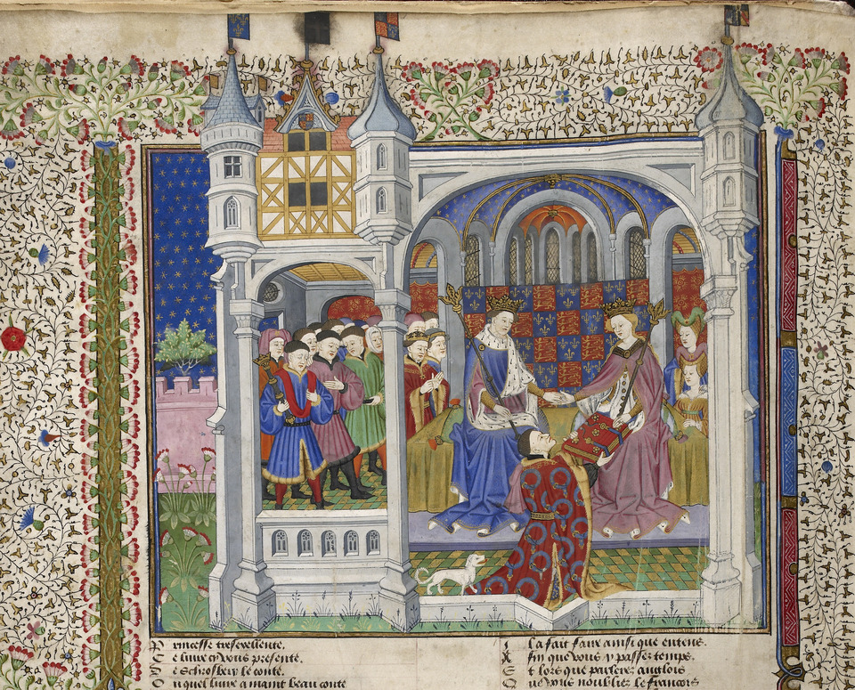

HoofdStuk 6.3

--------------------------------
De macht van vorsten
Op het Binnenhof in Den Haag staat een verguld beeldje van graaf Willem II van Holland (afbeelding 11). Toen Willem in 1247 19 jaar oud was, werd hij door Duitse edelen en bisschoppen gekozen tot koning van het Duitse rijk. Na de verkiezing ging een Duitse koning meestal naar Rome waar de paus hem tot keizer kroonde. Maar voordat Willem deze reis kon maken, werd hij tijdens een veldtocht in West-Friesland gedood.
In de tijd van Willem II waren de Nederlanden deel van het Duitse rijk. De hertogen, graven en bisschoppen die de gewesten bestuurden, waren leenmannen van de Duitse koning. De positie van hoge edelen was erfelijk. De Duitse koning leek machtig, omdat zijn rijk groot was, maar in werkelijkheid was zijn positie zwak. Dat kwam door het Duitse kiessysteem waarin elke koning werd gekozen door vier hoge edelen en drie bisschoppen: de keurvorsten (afbeelding 24). Het Duitse koningschap was dus niet erfelijk zoals in andere staten. Duitse koningen waren hierdoor erg afhankelijk van lagere machthebbers.
Vanaf de 10e eeuw hadden de Duitse koningen geprobeerd hun macht te vergroten. Na de dood van een bisschop koos en benoemde de koning een nieuwe bisschop en gaf hem het gebied van zijn voorganger in leen. Dat gebeurde bijvoorbeeld in Utrecht. De plechtige benoeming van een bisschop heet investituur. Daarbij kreeg de bisschop een ring van de koning. Een koning koos meestal een nieuwe bisschop die hem trouw was. Bisschoppen waren hierdoor trouwer aan de koning dan hoge edelen. Maar de pausen waren tegen de benoeming van bisschoppen door koningen. In 1075 maakte de paus bekend dat bisschoppen alleen nog door pausen benoemd mochten worden. Volgens hem was de investituur een zaak van de kerk. Er ontstond al gauw een conflict tussen koningen en pausen. Deze Investituurstrijd tussen kerk (paus) en staat (koning) eindigde in 1122 met een overwinning van de paus.
Terug